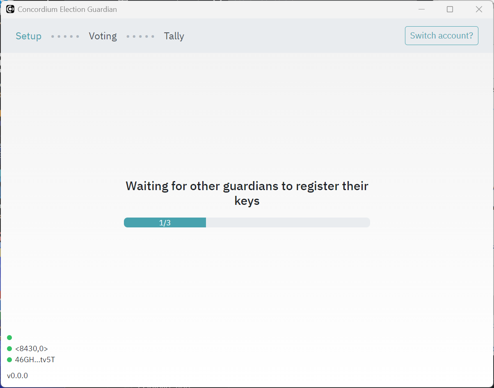
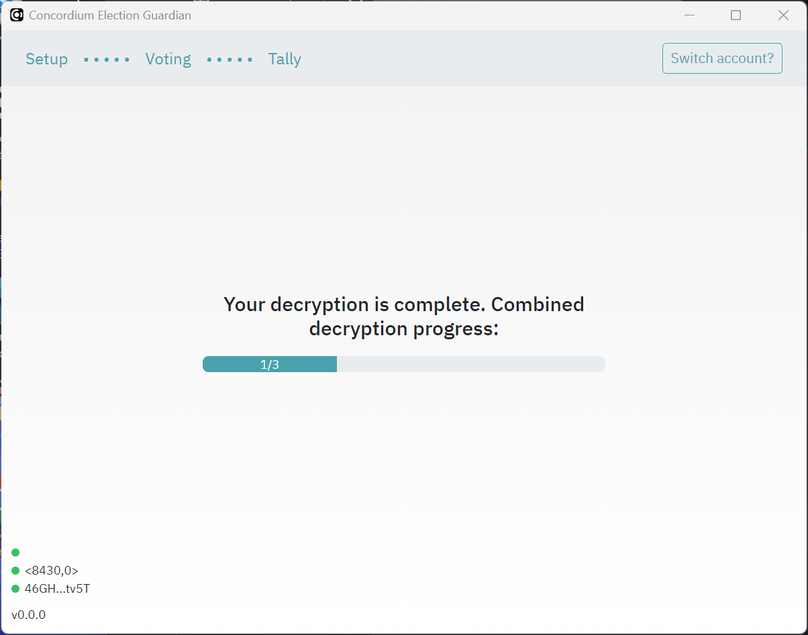

Guardians#
The guardian participates (via the guardian application) in all three phases of the election: the setup phase before the election, the election phase during which they may cast votes, and the tally phase at the end of the election.
In the setup phase, a distributed encryption key is generated. This ensures the secrecy of ballots. A number of guardians, as defined by the election parameters in the smart contract, register their public keys in the smart contract to say that they will tally election votes. After the election closes, the guardians decrypt their share of the votes and send the decrypted tally back to the smart contract. In this way, no one party tallies the votes for the election, ensuring privacy of the votes. Correctness of the result follows from the zero-knowledge proofs generated by the guardians and voters to prove that they performed their parts correctly.
Note
Guardians need to use the Concordium Wallet for Web or the CryptoX Concordium Wallet as these wallets have the ability to export account keys.
Pre-setup#
The guardians must give their account addresses to the organizer of the election. If you need to know how to find your account address, see Find and share your account address.
Guardians must download and install the Guardian desktop application that is created by the election coordinator.
Setup#
Before the election opens, the guardians must use the Guardian app to create their key pairs, register encrypted shares, and generate their secret key share to be used to decrypt the tally after the election.
Connect to election contract#
When the election contract has been initialized, the guardians must connect to the election contract using the Guardian app. This is done in the following sequence of steps:
Open the Guardian app.
Specify the election target, consisting of a Concordium network (“mainnet” or “testnet” from the dropdown) and contract index, which is a positive whole number specified in the input field.
Click Connect to connect to the election contract.
Connect your account#
The guardian app will sign the guardian transactions and submit them to the chain. For this, it needs the signing key of the account that is registered as a guardian in the smart contract.
To connect your account to the Guardian app, you must add your export file for your private account keys. For information about how to generate an export file, see Export a private key.
Once you have added the export file, enter a password.

Generate guardian keys#
Before the election opens, the guardians must use the Guardian app to generate a pre-key.
Click Generate guardian key to create your secret key and register your public key in the election smart contract.

The progress dialog shows the status. Click Send key registration to complete the process.
Once you have generated your pre-key you must wait until the other guardians have done the same.
Generate and register encrypted shares#
Once all guardians have generated their keys as described above, each guardian must go through the steps below to generate encrypted shares of their secret key for the other guardians.
Click Generate encrypted shares.

Click Register encrypted shares to register the encrypted shares information to the election smart contract.
Once you have generated and registered your encrypted shares you must wait until the other guardians have done the same.

Generate secret key share#
The final step is to generate your secret key share. This creates your share of the decryption key using your secret key along with the encrypted shares of the secret keys of the other guardians.
Click Generate secret key share.

Click Register validation OK.
Once you have generated your secret key share you must wait until the other guardians have done the same.

After all guardians have complete the process, a screen shows that election setup is complete and a countdown to the election start.

If corruption is detected the guardian should register a complaint in the contract.
After the election#
The app retrieves the encrypted tally from the contract automatically.
Generate your decrypted share#
Open the Guardian app.
Click Generate decryption share.
Click Send share registration.
Once you have registered your decryption share you must wait until the other guardians have done the same.

Register the decrypted share in the contract#
The final step creates a proof that can be checked by others to determine that the election has been fair.
Click Generate decryption proof.
Click Send proof registration.
Once you have registered your decryption proof you must wait until the other guardians have done the same.
After all guardians have registered decryption proofs, the decryption is shown as complete.

Reconfigure the app#
In the case of a reset of the election, the guardian app must be reconfigured. This can be done through the Settings menu.
The simplest way to reconfigure the app to target the new election is to click Set Election Target and update the network and contract index.
Note
On Windows/Linux, it might be required to press Alt on your keyboard to bring up the application menu where the “Settings” menu is available.
Uninstall the app#
Once the election is final, guardians should uninstall the app. The instructions below describe how to uninstall the app for each platform.
Windows#
Uninstall the app as you uninstall all apps on Microsoft.
Delete the folder C:\Users\<user>\AppData\com.concordium.guardian to remove all guardian keys.
macOS#
Uninstall the app as you uninstall all apps on macOS.
Delete the folder ~/Library/Application Support/com.concordium.guardian where ~ represents either $HOME or /Users/<username> to remove all guardian keys.
Linux#
On linux, the application data is stored in one of two places depending on your system:
$XDG_DATA_HOME/com.concordium.guardian$HOME/.local/share/com.concordium.guardian
Delete this folder to remove all guardian keys.

{kind=link}
{kind=link}
{kind=link}
{kind=link}
{kind=link}
{kind=link}
{kind=link}
{kind=link}
{kind=link}
{kind=link}
{kind=link}